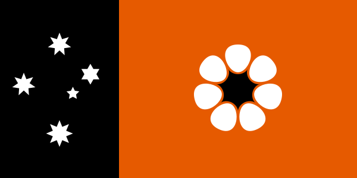
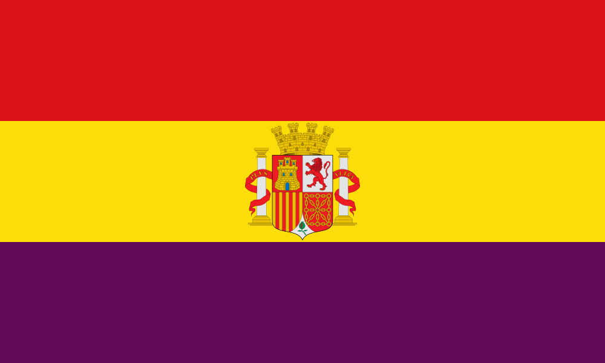

Introduction
Something completely different from my professional career is my hobby of vexillology. Vexillology is considered the study and design of flags. Below is a list of my personal favorites and my reasoning behind the choice.
Flag of Estonia
Estonia, like Germany, are one of the few European countries that feature a black band on their flag. In this case, the colors of blue, black, and white are based off the colors of the forests in Estonia after snowfall. According to the Estonian Free Press, the blue band represents the sky, and bodies of water. The black represents the soil. And white represents "the Estonian people reaching happiness and light."
Flag of the Northern Territory, Australia

A recent find that appeared in my radar, the flag of a state in Australia known as the Northern Territory. The left ensign is covered with the Southern Cross, a series of stars also found on Australia's and New Zealanad's flags. What is intriguing is the lack of popular colors often used in flags throughout the world which are red, blue, and white. It does feature white on the Southern Cross and the Flower, I admit, but white is often paired with the other popular colors. It has been so long since I have seen white without red and blue on the same flag so it is refreshing to see the colors of orange and black instead.
Flag of the Second Spanish Republic

The Second Spanish Republic is a defunct state from the Interwar Period between World War 1 and World War 2. During the republic's existence, the image above was the nation's flag. What is shocking about this flag is the rare use of purple. Purple is considered a royal color partly due to the association with the Byzantines of history and partly due to the difficult production of purple. It was not until the 20th century that purple was easy to manufacture from artificial sources. Thus, the Second Spanish Republic, a young nation of the times, decided to utilize purple on its national flag as a nod towards its monarchical roots.